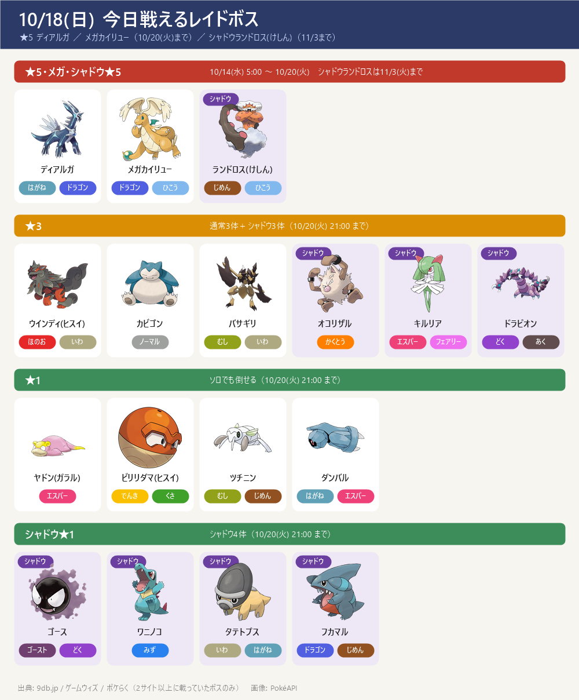
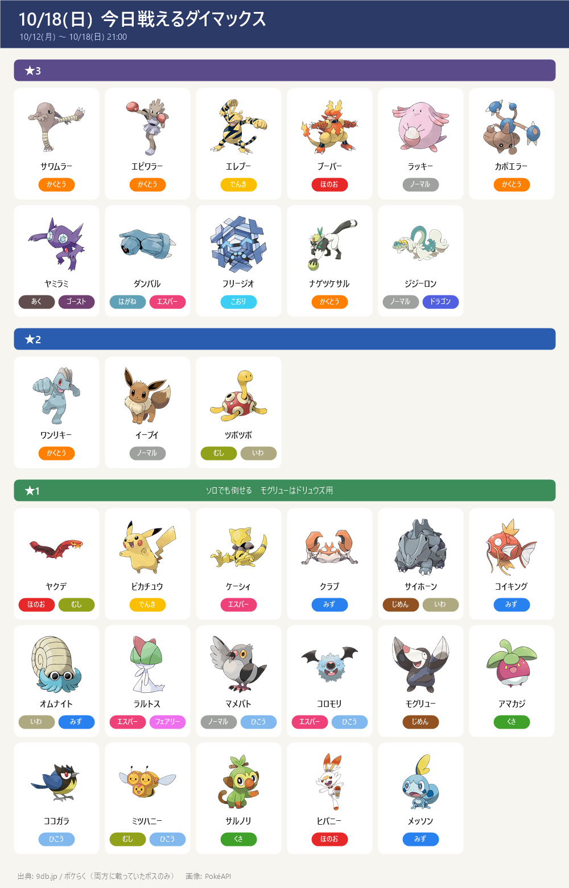
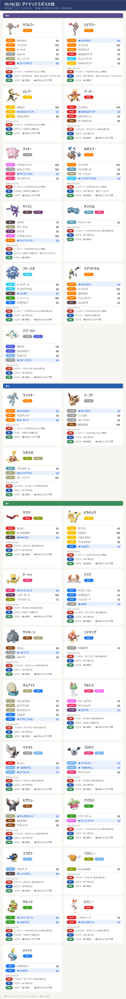
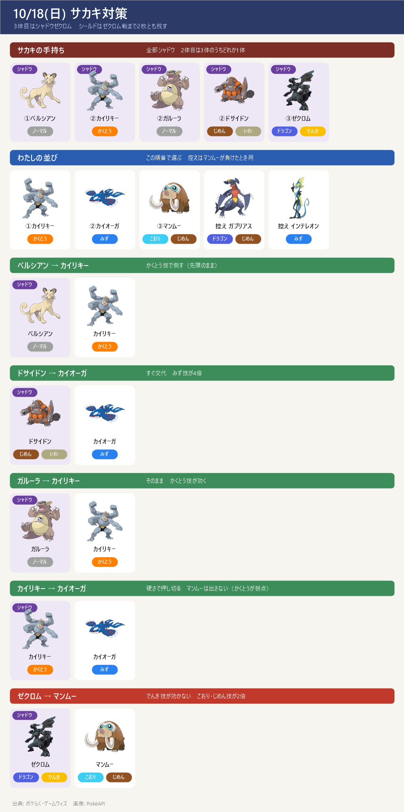

今日のポイント
- 今日 21:00 でマックスバトルのボスが入れ替わり：今週の★1 モグリュー（アメ50でドリュウズ）は今日が最終日。9db の来週（10/19～10/25）の一覧にも残っている
- あした 10/19(月) マックスマンデー：ダイマックス ニューラ（あく・こおり）→ かくとう技が4倍＝カイリキー（ダイナックル）。時刻は 9db 6:00～21:00、攻略大百科 18:00～19:00 → ゲーム内で確認を
- ★5 ディアルガ（はがね・ドラゴン）→ じめん・かくとう技が2倍。メガカイリュー（ドラゴン・ひこう）→ こおり技が4倍。どちらも 10/20(火) まで。11/14 のダイマックス ディアルガ用にアメを貯めるならあと3日
- レイド（10/14 から・変わらず）：★5 ディアルガ／メガカイリュー、★3 ウインディ(ヒスイ)・カビゴン・バサギリ、★1 ヤドン(ガラル)・ビリリダマ(ヒスイ)・ツチニン・ダンバル
- 秋の遠足：相棒といっしょ ～10/19(月) 20:00（あすまで）
- 10/24(土) 14:00～17:00 ユクシーのマックスバトルデイ（日本はユクシー）：攻略ページ（ダイマックス ユクシー）作成済み。ゲンガーのダイホロウ Lv2 は 10/23(金) までに
- 10/22(木) 18:00～19:00 ネマシュのスポットライトアワー（捕まえるとすな2倍）→ すなはドサイドンの強化へ
- サカキ：1戦目は勝利済み。2個目のスーパーロケットレーダーは保留中
- GOパス：10月。1日に稼げるのは250ptまで、期限は 11/3(火) 10:00
東京の巣：東京の巣 10/8(木)〜10/22(木)（別ページ）
今日戦えるレイドボス
★5 ディアルガ ／ メガカイリュー（10/20(火)まで）／ シャドウランドロス(けしん)（11/3まで）

今日戦えるダイマックス
10/12(月) ～ 10/18(日) 21:00
- ※ここに載せたのは9db とポケらくで一致したボスだけ。今週は ★1 にココガラが多め（マックスマンデーの続き）。9db.jp にはほかに ★1 ヒトカゲ・ゼニガメ・カブト など多数、★2 ホエルコ・ヒンバス・ダルマッカ、★3 モノズ・タイレーツも載っている
- 【各ボスのスペシャルアタック候補】（下のカード。数字はレイド・マックスバトルでの威力。★＝ボスが使ってくると楽な、いちばん弱い技（ボスと同じタイプの技は1.2倍で計算。こちらのポケモンとの相性は見ていない）。戦闘中に技名が出たら受け役を合わせる）


サカキ対策（シャドウゼクロム）

- 10/10 時点：1戦目に勝利（実際の並び：カイリキー → カイオーガ → ガブリアス）。2個目のレーダーは受け取り済み・挑戦は保留中。挑むときは道具からレーダーを起動
- サカキの手持ち（10/2〜）：①ペルシアン（ノーマル）→ ②カイリキー／ガルーラ／ドサイドンのどれか → ③シャドウゼクロム（ドラゴン・でんき）
- ゼクロムの弱点：じめん・こおり・ドラゴン・フェアリー。じめんタイプは、でんき技が効かないので特に安定
- 並び（この順番）：①カイリキー → ②カイオーガ → ③マンムー（控え：ガブリアス）
- ペルシアン → カイリキーのかくとう技で倒す
- 2体目がドサイドン → すぐカイオーガに交代（みず技が4倍）
- 2体目がガルーラ → カイリキーのまま
- 2体目がカイリキー → カイオーガで受けて倒す（マンムーはかくとうが弱点なので出さない）
- ゼクロム → マンムー（でんき技が効かない・こおりもじめんも2倍）。ガブリアスはドラゴン技を2倍で受けるので控え
- シールド：2枚ともゼクロム戦まで残す。サカキも2枚持っているので、最初は早く撃てるゲージ技でシールドを使わせる
- 理想の技：マンムー＝こなゆき／ゆきなだれ・10まんばりき カイリキー＝カウンター／ばくれつパンチ・クロスチョップ カイオーガ＝たきのぼり／なみのり・ハイドロポンプ ガブリアス＝マッドショット／じしん
- 再戦：同じ場所のサカキなら、負けても手持ち（2体目・技）は変わらない。負けたら2体目を見て組み直して何度でも挑める（レーダーは消えない）。別の場所のサカキだと変わることがある
- 2個目のレーダー：GOパス収穫祭デラックスのランク報酬だった（受け取りは 10/7(水) 20:00 で終了）
この先の予定
- 10/18(日) 21:00 マックスバトルのボス入れ替わり
- 10/19(月) マックスマンデー：ダイマックス ニューラ（かくとう4倍 → カイリキー）／ 20:00 秋の遠足終了 ／ 17:00～10/24(土) メテノシャワー（オリオン座流星群）
- 10/20(火) おひろめデイ 10:00～20:00（対象は当日確認）／ 21:00 ディアルガ・メガカイリュー レイド終了
- 10/21(水) ～10/27 ★5 パルキア ／ メガリザードンX・Y、18:00～19:00 レイドアワー：パルキア
- 10/22(木) 18:00～19:00 スポットライトアワー：ネマシュ（すな2倍 → ドサイドンへ）／ 9:00 巣の入れ替わり
- 10/23(金) までに ゲンガーのダイホロウを Lv2 に
- 10/24(土) 14:00～17:00 マックスバトルデイ：ユクシー（攻略ページあり）
- 10/26(月) マックスマンデー：ヤミラミ ／ 満月（ガチグマに進化可能・夜のみ）
- 10/29(木) 18:00～19:00 スポットライトアワー：ゴース（進化させるとXP2倍）
- 11/14(土)・15(日) ワイルドエリア：グローバル（ダイマックス ディアルガ・パルキア）→ ボス別の攻略ページ・育成順ページ作成済み
サイトで違っていた点
- メガカイリューの終了時刻: 9db は 10/20 21:00、攻略大百科は 20:30 → ゲーム内で確認を
- マックスマンデー（10/19 ニューラ・10/26 ヤミラミ）の時刻: 9db は 6:00～21:00、攻略大百科は 18:00～19:00 → ゲーム内で確認を
- 今週（～10/18）のマックスバトル: 9db には ★1 ヒトカゲ・ゼニガメ・キャタピー・ガーディ・ゴース・カブト・フシギダネ・ホーホー・ナックラー・タマザラシ・ダンゴロ・モンメン・ヤブクロン・マーイーカ・ホシガリス・ウールー・ミブリム、★2 ホエルコ・ヒンバス・ダルマッカ、★3 モノズ・タイレーツも載っているが、ポケらくの一覧には無い → 採用せず
- 来週（10/19～10/25）もモグリューが出るのは 9db のみ（ポケらくは★別の一覧なし）
- ファンタジー大乱闘6（10/16～10/20）: 9db のみ（攻略大百科に無し）→ 採用せず
- 満月（10/26）: 9db のみ → この先の予定にだけ記載
- ダイマックスボスの技候補はゲームデータ(PvPoke)から（おんがえし・やつあたりは除外）、威力は pogoapi.net
出典: 9db.jp/pokemongo（開催イベント一覧・レイド日程・マックスバトル日程）／pokemon.gamepedia.jp/go（攻略大百科 今月のイベント）／pokemongo.gamewith.jp（出現中のレイドボス）／pokemongo-raku.com（レイドボス一覧・マックスバトル）／pvpoke.com ゲームデータ（技候補）／pokemongo.com/ja/news/fall-marathon-buddy-trek-2026（公式・秋の遠足）／pokemongo-raku.com/post163506（秋の遠足）
画像: PokéAPI ／ 2サイト以上で一致した情報だけを載せています